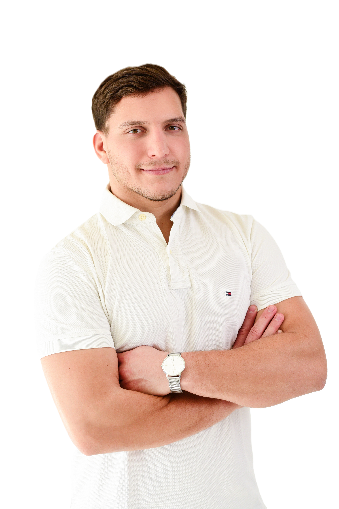

Galambos Gergely vagyok, gyógytornász. A Pécsi Tudományegyetemen végeztem: 2023-ban alapszakon, majd 2026-ban mesterszakon szereztem diplomát.
A sport gyerekkorom óta az életem része, versenyszinten is űztem, így jól tudom, milyen fontos a megfelelő mozgás, a gyors regeneráció és a sérülések megelőzése.
Jelenleg a Falco KC kosárlabdacsapat fizioterapeutájaként dolgozom, ahol napi szinten segítem a sportolókat abban, hogy a legjobb formájukat hozzák. A munkám során szerzett tapasztalatokat a hozzám fordulók kezelésében is kamatoztatom, legyen szó fájdalomcsillapításról, rehabilitációról vagy teljesítményjavításról.
Bár a sportrehabilitáció kiemelt terület számomra, fontosnak tartom hangsúlyozni, hogy nem kizárólag sportolókkal foglalkozom. Nagy számban segítek ülőmunkát vagy fizikai munkát végzőknek, akik nyak-, hát- vagy egyéb mozgásszervi fájdalmakkal küzdenek, valamint műtétek utáni rehabilitációban is támogatást nyújtok.
Hiszek abban, hogy mindenki számára létezik egyéni, jól működő megoldás, és ebben segítek neked is.

Egyénre szabott gyógytorna a panaszok enyhítésére
Műtétek és sérülések utáni mozgásfunkció helyreállítása
Fájdalmas panaszok enyhítése, célzott kezelése
Telefon: +36 30 981 6499
Email: galambos.gergely12@gmail.com
Cím: 9700 Szombathely, Alsóhegyi út 18